Show other secondary papers
Contact Renormalization of One-Mode Electron Correlation: Validation in Four- and Ten-Electron Systems
Authors: Itai Panas
Type: theory · Category: strongly correlated electrons · PDF: https://arxiv.org/pdf/2610.31031v1
Analysis basis: full PDF text, analyzed in chunks
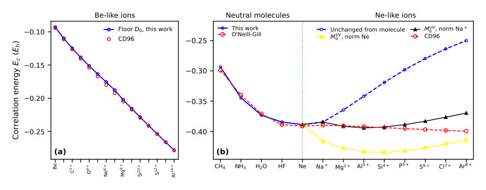
Summary. This theoretical work addresses how much information from the Hartree-Fock description is needed to predict the full correlation energy in complex quantum systems. By developing a source-return construction, the authors successfully reproduce known correlation trends across Be-like and Ne-like atoms. This validates a key physical separation principle in calculating electron correlation effects.
Why it may be interesting. The rigorous testing of correlation energy trends across a sequence of chemically diverse atoms and molecules provides a powerful, parameter-free validation of theoretical separation principles in many-body electronic structure theory.
Detailed structure
Main problem. The paper investigates whether the stationary Hartree-Fock information carrier contains sufficient information to determine the scalar correlation energy, despite the system's internal response being strongly multimode.
Main result. The proposed source-return construction successfully reproduces established molecular and ionic correlation trends with quantitative accuracy, validating a physical separation between the source strength and the return restriction.
Method. The authors employ a source–return construction to calculate the correlation energy, modeling the one-mode return using a shifted-square-root law and testing its consistency across different atomic and molecular sequences.
Model / system. The study analyzes many-electron eigenstates, focusing on Be-like (one-valence-pair) and ten-electron (Ne-like) systems, including molecules like CH4 and ions spanning from Ne to Ar8+.
Key observables. Correlation energy (Ec), source tensor (I_bare^ij), and the one-pair floor constant (D_0).
Important parameters / regimes. The relative return parameter (beta_model) and the comparison between 'fresh basis' and 'archived baseline' calculations.
Assumptions / limitations. The numerical agreement validates a physical separation between source strength and return restriction, rather than being the objective itself; the method assumes the mean field is sufficient for the scalar energy determination.
Figures summary. Figure 1 compares Be-like one-pair floor results and retained ten-electron comparisons; Table II provides representative atomic points for various correlation energy calculations.
Paper structure. The paper develops the source-return construction, first establishing the one-pair boundary using Be-like systems, and then extending the validation to larger ten-electron ionic series by testing consistency across different reference points.
Abstract
A stationary many-electron eigenstate has one dynamical phase although its internal response can be strongly multimode. We ask whether the stationary Hartree--Fock information carrier contains enough information to determine the scalar correlation energy through one effective return. In regularized Hartree--Fock, Gaussian primitive products fix a minimum-information relative-coordinate mode before any one-mode reduction; virial completion defines the correlation source, while exact contact measures the additional return restriction created by neighboring occupied pairs. The Be-like $1s^22s^2$ sequence establishes the one-valence-pair boundary: with no neighboring occupied valence pair, the source returns through the universal floor $D_0=\sqrt{1+δ^2}$. Ten-electron molecules and Ne-like ions then test how finite-pair contact dresses that return. The same parameter-free source--return construction reproduces the established molecular and ionic correlation trends with quantitative accuracy. The numerical agreement therefore serves as validation of a physical separation between source strength and return restriction, rather than as the objective by itself.
Coulomb-Driven Electronic Textures in Lightly Hole-Doped Cuprates
Authors: Wei-Wei Yang, Yang Shen, Yuxin Wang, Pengfei Li, Mingpu Qin, Kun Jiang
Type: theory · Category: strongly correlated electrons · PDF: https://arxiv.org/pdf/2610.30766v1
Analysis basis: full PDF text, analyzed in chunks
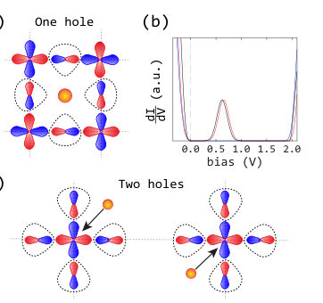
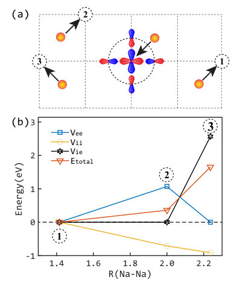
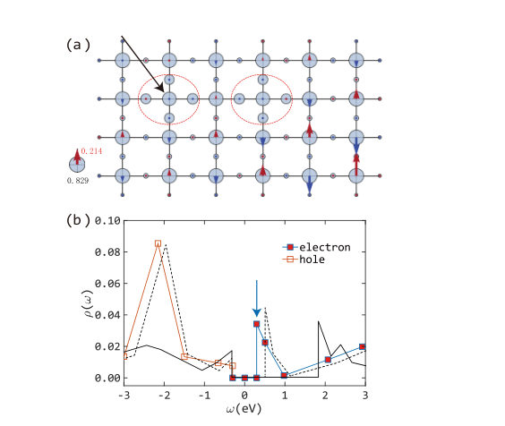
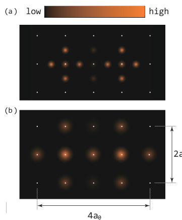
Summary. This work theoretically models the electronic structure of lightly doped cuprates, showing that Coulomb repulsion drives the localized holes into an asymmetric 'dipole' arrangement. This arrangement minimizes the total energy and provides a microscopic explanation for the characteristic $4a_0 imes 2a_0$ electronic patterns observed via scanning tunneling microscopy.
Why it may be interesting. The focus on Coulomb interactions driving specific, measurable spatial electronic textures ($4a_0$ periodicity) is highly relevant to understanding emergent order in strongly correlated quantum materials.
Detailed structure
Main problem. The study investigates the complex interplay between dopants and localized Zhang-Rice singlets in lightly hole-doped cuprates, aiming to explain the origin of characteristic electronic textures observed experimentally.
Main result. The system minimizes its total electronic energy by forming an asymmetric 'dipole' configuration, which provides a microscopic mechanism for the observed $4a_0 imes 2a_0$ electronic structure.
Method. The authors employed the MPS-based Lanczos method and utilized a Hatree-Fock approach within the Emery model framework to calculate total energies and local density of states.
Model / system. The physical system is lightly hole-doped cuprates, modeled using concepts derived from the Emery model, focusing on the interaction between dopants and localized Zhang-Rice singlets.
Key observables. In-gap bound states ($ ext{E}b \sim 0.6 ext{–}0.7 ext{ eV}$), the total energy ($E$), and the characteristic $4a_0 imes 2a_0$ internal structure observed in STM.}
Important parameters / regimes. Low doping concentrations (single/two holes), poorly screened Coulomb potential, and the inclusion of tunneling matrix-element effects.
Assumptions / limitations. The calculations neglect the kinetic energy ($E_{ ext{kin}}$) and rely on the Hatree-Fock approximation for the electronic interactions.
Figures summary. Figures illustrate STM results showing the transition from symmetric to 'four-lobe' clover patterns upon doping, and energy comparisons showing the dipole configuration yields the lowest total energy.
Paper structure. The paper progresses by establishing the physical model (dopants interacting with ZR singlets), calculating the total energy for various configurations to find the ground state, and finally using advanced methods (Lanczos, tunneling DOS) to derive the characteristic spatial electronic texture.
Abstract
Motivated by recent experiments on Ca$_2$CuO$_2$Cl$_2$, we present a comprehensive study of the interplay between dopants and localized Zhang-Rice singlets in lightly hole-doped cuprates. Owing to the poorly screened Coulomb potential, the interactions between dopants and localized Zhang-Rice singlets favor asymmetric electronic configurations characterized by effective electric "dipoles". Using the MPS-based Lanczos method, we show that these localized holes give rise to in-gap bound states within the charge-transfer gap. When tunneling matrix-element effects are included, the bound states exhibit a characteristic $4a_0 \times 2a_0$ internal structure, consistent with experimental observations. Our results suggest that Coulomb interactions between dopants and localized Zhang-Rice singlets, together with tunneling matrix-element effects, provide a microscopic mechanism for the observed $4a_0$ electronic structures.
Ferroelastic Reversal Magnon Thermal Hall Effect in a Fully Compensated Ferrimagnet
Authors: Yingxi Bai, Zihan Chen, Chengwang Niu, Ming Yang
Type: theory · Category: other · PDF: https://arxiv.org/pdf/2610.30733v1
Analysis basis: full PDF text, analyzed in chunks
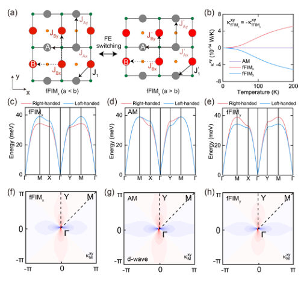
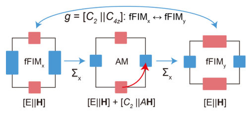
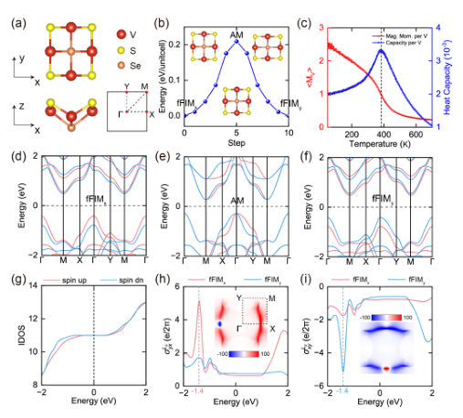
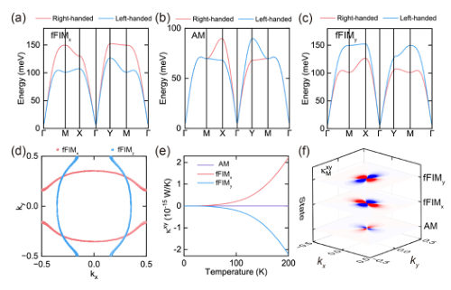
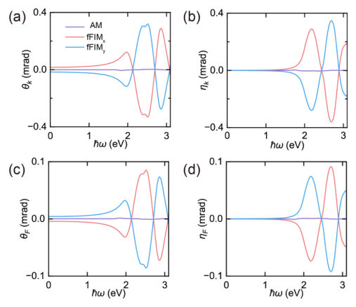
Summary. This work establishes ferroelastic switching as a powerful, non-volatile control mechanism for manipulating the magnon thermal Hall effect in fully compensated ferrimagnets. By exploiting symmetry changes, the authors show that the transverse heat transport can be reversed without altering the net magnetization. This mechanism is predicted to be realized in materials like monolayer V2SSe, opening avenues for advanced magnonic devices.
Why it may be interesting. The ability to non-volatilely switch a topological response (like the thermal Hall effect) using a structural/lattice degree of freedom (ferroelasticity) is highly relevant for developing next-generation spintronic and magnonics devices.
Detailed structure
Main problem. The primary challenge addressed is achieving reversible and nonvolatile control over the magnon thermal Hall response in magnetic systems that possess zero net magnetization.
Main result. The study demonstrates that ferroelastic switching can reverse the sign of the magnon thermal Hall effect ($\kappa_{xy}$) in fully compensated ferrimagnets while maintaining zero net magnetization.
Method. The research combines theoretical modeling using a Heisenberg-Dzyaloshinskii-Moriya Hamiltonian with first-principles calculations (Green's function, NEB) to predict material behavior.
Model / system. The system under study is a fully compensated ferrimagnet, exemplified by monolayer V2SSe. The theoretical framework involves a minimal Heisenberg-Dzyaloshinskii-Moriya model applied to a 2D lattice, incorporating ferroelastic switching as the control mechanism.
Key observables. Magnon Thermal Hall Conductivity ($\kappa_{xy}^M$), Orbital Hall Conductivity ($\sigma_{Lz}$), and Magneto-optical spectra (Kerr/Faraday).
Important parameters / regimes. The control mechanism relies on the symmetry operation [C2 || C4z] relating two orthogonal ferrimagnetic variants.
Assumptions / limitations. Model calculations often assume $A_z = 0$, and thermal Hall calculations are limited to temperatures below 200 K.
Figures summary. Figures illustrate the Heisenberg-DM model, the temperature dependence of $\kappa_{xy}$ across different magnetic phases, chirality-resolved band structures, and the evolution of magnetic configuration during ferroelastic switching.
Paper structure. The paper establishes the theoretical framework using a minimal Hamiltonian, analyzes the effect of ferroelastic switching on magnon bands and Berry curvature, and validates the findings using first-principles calculations on a candidate material, V2SSe.
Abstract
Magnons offer a charge-neutral channel for spin and heat transport, yet reversible and nonvolatile control of their thermal Hall response poses a fundamental challenge in systems with zero net magnetization. Here, we establish ferroelastic switching as an effective route to manipulate magnonic transverse responses in fully compensated ferrimagnets. A minimal Heisenberg-Dzyaloshinskii-Moriya model reveals that ferroelastic switching can re-orientate the lattice anisotropy, which reconstructs the chirality-resolved magnon bands and Berry curvature distribution. Consequently, the two orthogonal fully compensated ferrimagnetic variants related by [C2||C4z] exhibit magnon thermal Hall responses with opposite signs, whereas the response vanishes in the intermediate altermagnetic phase. First-principles calculations further identify monolayer V2SSe as a promising material candidate for realizing the proposed ferroelastic control of transverse magnon transport. Remarkably, ferroelastic switching drives a dual magnonic-electronic band reconstruction, enabling nonvolatile reversal of the magnon thermal Hall effect while producing anisotropic orbital Hall responses and distinct magneto-optical spectra as complementary transport and optical fingerprints. Our findings establish ferroelasticity as an effective route to nonvolatile magnon control and multichannel state identification in zero net magnetization systems.
Field-free superconducting diode and tunable vortex dynamics in NbN/FePt stripe-domain heterostructures
Authors: Juan C. Zapata, Emilio De Biasi, Martin Sirena, Jeehoon Kim, Nestor Haberkorn
Type: both · Category: other · PDF: https://arxiv.org/pdf/2610.30556v1
Analysis basis: full PDF text, analyzed in chunks
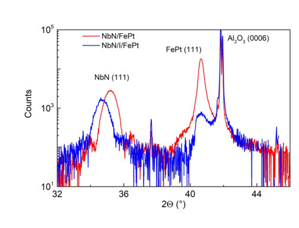
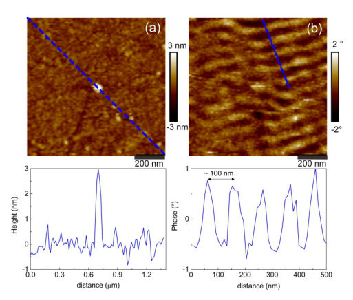
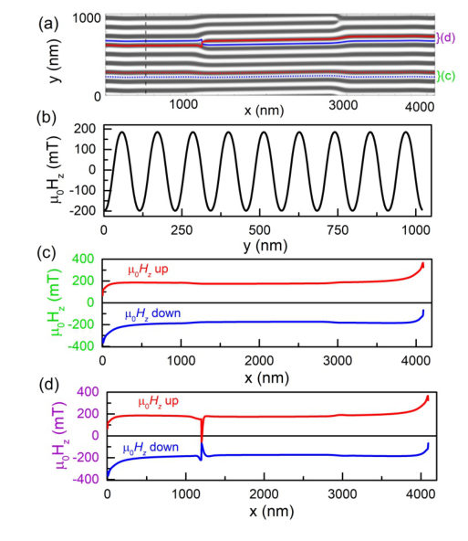
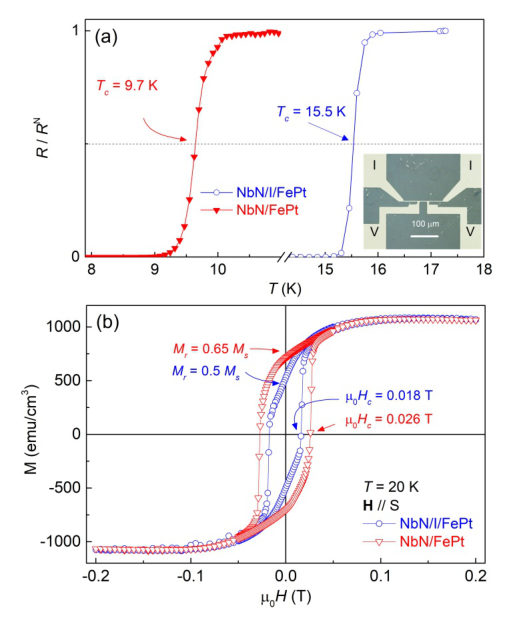

Summary. This paper reports on the creation of superconducting diodes in NbN heterostructures using ferromagnetic FePt layers patterned into magnetic stripes. By analyzing the current-voltage characteristics, the authors show that the superconducting nonreciprocity is magnetically controlled, depending on stripe orientation. This work provides a reconfigurable method to manipulate vortex dynamics and superconducting properties using patterned magnetic materials.
Why it may be interesting. The controlled interplay between magnetic texture and superconducting transport offers a novel platform for engineering quantum phenomena, relevant to understanding dissipation and non-equilibrium dynamics in superconducting circuits.
Detailed structure
Main problem. The research aims to control superconducting nonreciprocity and flux-flow stability in NbN-based heterostructures by leveraging the remanent magnetic fields generated by stripe-domain ferromagnetic overlayers.
Main result. The study demonstrates that the superconducting diode effect is strongly dependent on the orientation of the magnetic stripes, and this nonreciprocity can be maintained or tuned by incorporating an AlN spacer layer.
Method. The work combines electrical transport measurements (I-V curves) to probe nonreciprocity with micromagnetic simulations to model the underlying vortex dynamics influenced by stray fields.
Model / system. The physical system is NbN/FePt and NbN/AlN/FePt heterostructures, where the superconducting properties are coupled to the magnetic stray fields from the patterned FePt layer.
Key observables. Superconducting diode efficiency (nonreciprocity), vortex transport asymmetry, flux-flow instability velocity, and critical temperature ($T_c$).
Important parameters / regimes. Stripe domain periodicity ($\approx 100 ext{ nm}$), spacer thickness (AlN), applied magnetic field strength ($\le 1 ext{ T}$), and current polarity.
Assumptions / limitations. The nonreciprocity is attributed to asymmetric vortex transport governed by the magnetic stray field landscape, and the AlN spacer successfully decouples electronic proximity effects while preserving magnetic coupling.
Figures summary. The notes suggest figures comparing I-V curves for different stripe orientations and spacer conditions, and potentially showing simulated stray field profiles.
Paper structure. The paper progresses by establishing the physical platform (heterostructures), characterizing the magnetic structure (MFM/XRD), measuring the superconducting response (diode effect), and finally interpreting the results through vortex dynamics models.
Abstract
We demonstrate reconfigurable, field-free superconducting diode behavior in NbN/FePt and NbN/AlN/FePt heterostructures with remanent stripe domains in the FePt layer. NbN films 10 nm thick are capped either directly with FePt or through a thin AlN spacer, which reduces electronic proximity effects while preserving magnetic coupling through stray fields. At zero applied magnetic field, the superconducting diode efficiency reaches approximately 50--60% in NbN/FePt when the stripes are perpendicular to the current and is strongly reduced when they are parallel. The diode effect persists in NbN/AlN/FePt with efficiencies reaching approximately 35--40%, supporting a magnetic origin of the nonreciprocity. We interpret the response as asymmetric vortex transport in the remanent magnetic landscape, with preferential edge vorticity and a Lorentz force that favors inward flux injection or outward motion depending on current polarity. Under applied perpendicular magnetic fields, the interplay between the external field and the magnetic stray fields modifies the flux-flow instability and the apparent instability velocity inferred from transport, with values below those reported for bare NbN films. These results show that stripe-domain ferromagnetic overlayers provide a reconfigurable route to control superconducting nonreciprocity and flux-flow stability in NbN-based heterostructures.
Orientation-selective microwave heating of laser-graphitized diamond at 2.45 GHz
Authors: Massimiliano Zamengo, Meguya Ryu, Haoran Mu, Hsin-Hui Huang, Nguyen Hoai An Le, Tomas Katkus, Darius Gailevičius, Junko Morikawa, Saulius Juodkazis
Type: both · Category: other · PDF: https://arxiv.org/pdf/2610.30453v1
Analysis basis: full PDF text, analyzed in chunks
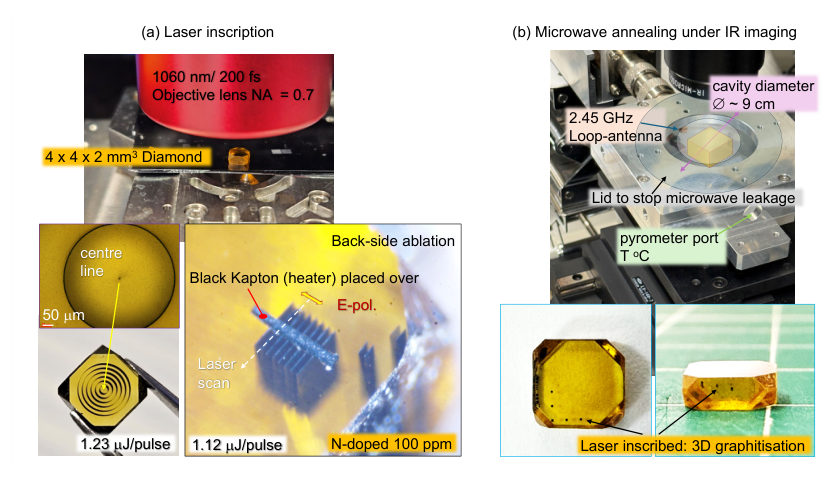

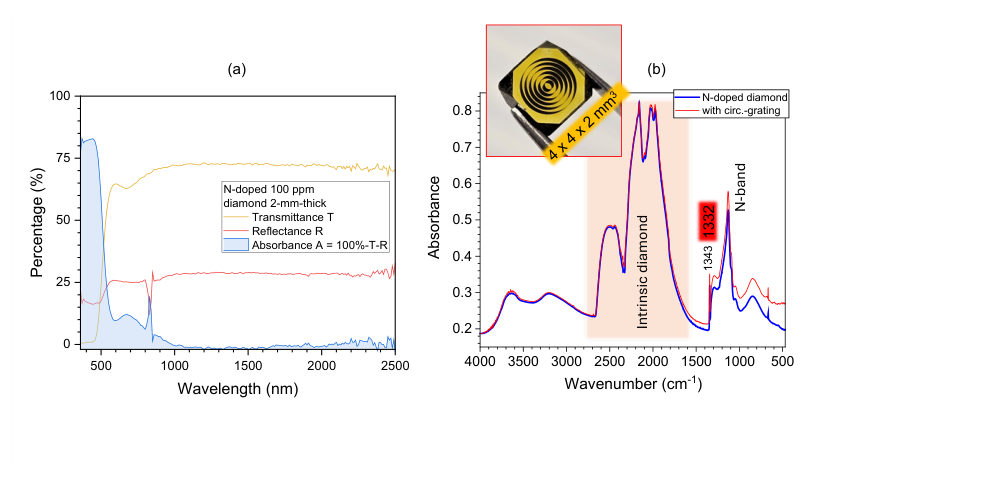
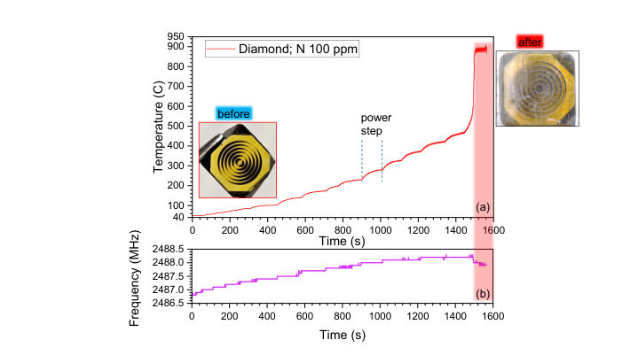

Summary. This work demonstrates that by using femtosecond lasers to write graphitic structures into bulk diamond, one can create a material that strongly absorbs microwave energy at 2.45 GHz. Crucially, this absorption is highly dependent on the orientation of the written structure relative to the microwave electric field, enabling precise, tunable microwave engineering in transparent solids.
Why it may be interesting. The precise control over microwave absorption via structural engineering (laser writing) in a transparent host material like diamond is highly relevant for developing novel quantum microwave components or sensing platforms.
Detailed structure
Main problem. The study investigates how laser-inscribed graphitic structures in diamond can be used to achieve highly controllable and orientation-selective microwave absorption and heating at 2.45 GHz.
Main result. Strong microwave absorption and subsequent high-temperature heating are only observed when the inscribed structure's depth axis is aligned perpendicular to the cavity electric field, demonstrating strong anisotropy.
Method. The research combines femtosecond laser inscription to create conductive $ ext{sp}^2$ architectures in bulk diamond, followed by microwave heating measurements in a resonant cavity.
Model / system. The system is an N-doped HPHT diamond crystal modified by laser-written graphitic gratings. The physics is modeled using effective loss factors ($\varepsilon''_{ ext{eff}}$) incorporating both dipolar and Ohmic dissipation, with orientation dependence parameterized by a screening factor $S$.
Key observables. Microwave absorption (measured via $T, R, A$), radiative temperature, resonant frequency ($\Delta f$), and quality factor ($Q$).
Important parameters / regimes. Microwave frequency (2.45 GHz), laser wavelength (1030 nm), structure depth ($\sim 1.8 ext{ mm}$), and input power ($P_{ ext{in}}$ up to $100 ext{ W}$).
Assumptions / limitations. The analysis relies on modeling the interface as a metal-semiconductor contact and assumes the validity of radiative pyrometry, while acknowledging the difficulty in separating temperature change from emissivity change.
Figures summary. Figures show the laser inscription geometry, the microwave cavity setup, temperature evolution during heating (showing plateaus and abrupt jumps), and spectral mapping of graphitic features.
Paper structure. The paper progresses from establishing the fundamental lack of absorption in pristine diamond to demonstrating strong, orientation-dependent absorption using laser-written structures. It details the thermal response under varying power and concludes with theoretical modeling of the absorption mechanism.
Abstract
Pristine diamond couples negligibly to a 2.45 GHz field. We show that femtosecond-laser inscription of a buried graphitic (sp2) architecture makes a 4 x 4 x 2 mm^3 N-doped (100 ppm) high-pressure high- temperature (HPHT) crystal absorb strongly, and that the absorption is switched by the orientation of the inscribed structure relative to the cavity electric field. With the 1.8 mm depth of a concentric grating along E, stepped power gave a smooth staircase to an indicated ~500C at 80 W followed, at 90 W, by an abrupt excursion to an indicated ~900C with surface roughening and terraced oxidation. Rotating the same sample so that the grating diameter lay along E, and an unmodified crystal in either orientation, gave no signal above the ~40C floor. We account for this by the depolarisation factors L of the sub-wavelength tracks, collapsed into one screening parameter S = Lσ/(ωε0εh), here, σ conductivity, ω - cyclic frequency, εh,0 - permittivity of host and vacuum, respectively. The model turns element length, diameter and writing regime into design variables for microwave absorption in a transparent host.
Piezo-Kerr effect in altermagnets and noncollinear antiferromagnets
Authors: Yuqi Liu, Qiu-Shi Huang, Xinfeng Chen, Yilin Han, Run-Wu Zhang, Zhi-Ming Yu, Yugui Yao
Type: theory · Category: other · PDF: https://arxiv.org/pdf/2610.30929v1
Analysis basis: full PDF text, analyzed in chunks
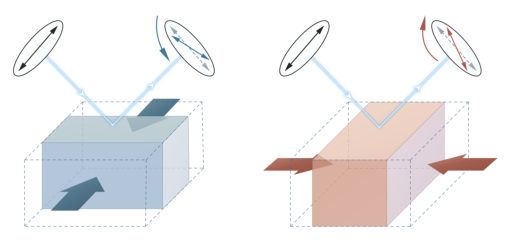
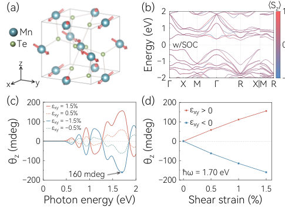
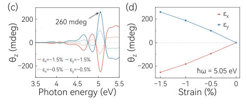
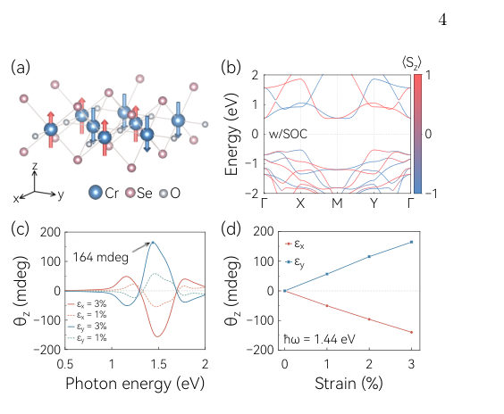
Summary. This work develops a general theoretical framework using group theory to predict the piezo-Kerr effect in antiferromagnets. By matching the symmetry representations of strain and the Kerr response, the authors identify materials where strain can activate a previously forbidden optical response. Calculations confirm that moderate strain induces large, switchable Kerr rotations, offering a robust method for controlling magnetism optically.
Why it may be interesting. While not directly about quantum information, the detailed symmetry analysis and the ability to engineer a measurable optical response (Kerr effect) using mechanical strain provides a powerful, symmetry-dictated control mechanism relevant to spintronics and magnetoelectric coupling in quantum materials.
Detailed structure
Main problem. The paper aims to establish a general, symmetry-based route to achieve large and switchable magneto-optical Kerr responses in compensated magnets (altermagnets and noncollinear antiferromagnets) by activating responses forbidden in the unstrained state.
Main result. They identified 16 magnetic point groups where strain can induce a measurable Kerr effect, and first-principles calculations on materials like MnTe2 and Cr2Te2O confirm large, sign-reversing Kerr rotations upon applying moderate strain.
Method. The study employs the 'representation-matching principle' from group theory to determine symmetry-allowed linear couplings between strain components and the Kerr response tensor, validated by first-principles DFT calculations.
Model / system. The focus is on altermagnets and noncollinear antiferromagnets exhibiting symmetry-enforced vanishing net magnetization. The analysis uses the magnetic point group symmetry to constrain the coupling $ heta_i \propto \sum \Lambda_{i,jk} \epsilon_{jk}$.
Key observables. Kerr rotation ($ heta_z$), spin splitting, and the strain-induced change in $ heta_z$ (reaching tens to hundreds of millidegrees).
Important parameters / regimes. Strain magnitude (0.5–3%), photon energy ($\hbar\omega$), and the irreducible representations (IRRs) of the Magnetic Point Group (MPG).
Assumptions / limitations. The analysis relies on the linear coupling approximation ($ heta_i \propto \epsilon_{jk}$) and the symmetry constraints derived from the MPG.
Figures summary. Figures illustrate the crystal structures, band structures (showing spin splitting under strain), and the calculated dependence of the Kerr rotation ($ heta_z$) on applied uniaxial strain for various materials.
Paper structure. The paper proceeds by establishing the theoretical framework using representation theory to identify symmetry-allowed couplings, enumerating the relevant magnetic point groups, and then applying these principles via first-principles DFT calculations to predict and confirm the large, switchable piezo-Kerr effect in specific material classes.
Abstract
Symmetry is usually viewed as a constraint on physical responses, but it can also be used to design the fields that control them. Here, we adopt the representation-matching principle used to identify conjugate fields of order parameters and apply it to response tensors. A linear coupling, the key ingredient for sign-switching control, is symmetry-allowed when a component (or a combination of components) of the control field and the selected response component share the same irreducible representation of the magnetic point group (MPG) of the system. Applied to the magneto-optical Kerr effect, this principle yields a piezo-Kerr effect, in which specific strain combinations activate a Kerr response forbidden in the unstrained state. Enumerating all 122 MPGs, we identify 16 groups in which the unstrained Kerr response is forbidden while a linear strain-induced contribution is allowed. These groups are realized by altermagnets and noncollinear antiferromagnets with symmetry-enforced vanishing net magnetization. The active strain channels and the associated first-order sign reversals follow directly from symmetry. First-principles calculations for bulk MnTe$_{2}$ and CoF$_{2}$, and Cr$_{2}$Se$_{2}$O and Cr$_{2}$Te$_{2}$O monolayers confirm these predictions. In these materials, the Kerr rotation vanishes without strain, whereas 0.5-3% strain produces rotations ranging from tens to hundreds of millidegrees, and reversing the matched strain channel reverses the Kerr sign. These results establish a general route to large and switchable Kerr responses emerging from symmetry-forbidden states in compensated magnets.